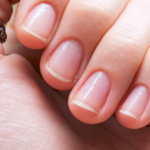
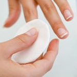
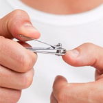
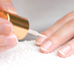
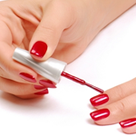
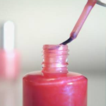
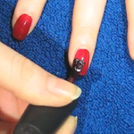

|  |
Start Fresh!Clean off your old polish with a cotton ball soaked in acetone-based remover. Then rub oil into your nail beds and use an orange stick to push back your cuticles. |
|  |
Remove ResidueGo back over the nail with a cotton swab dipped in polish remover. (This is the most-overlooked step of an at-home manicure, says Suzi Weiss-Fischmann, artistic director of OPI.) If your nails are oily, the polish won't stick. |
|  |
Shape UpUse a clipper to trim nails, if necessary, then file to smooth the edges. File in one direction only: Going back and forth can split and break nails, says Essie Weingarten, founder of Essie Cosmetics. |
|  |
Smooth the SurfaceRun a buffing block over nails to soften ridges. Wipe off any dust, then apply a base coat both to fill in unevenness and to protect your nails from possible discoloration. |
|  |
Painting Class
|
|  |
For some tips on manicures, click here. |
|  |
To watch a YouTube video on how to create a manicure at home, click here. |
Source: http://www.lhj.com/style/beauty/nails/the-perfect-home-manicure/